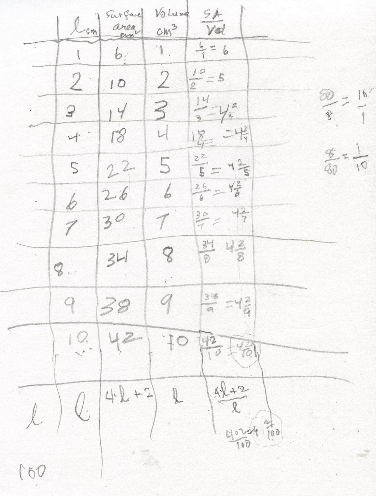

The ratio of (Surface Area)/(Volume) of rods leads to an infinite sequence and why rats are nocturnal animals
Kelda, age 11, filled in a chart like the one that Maya, age 8, did below. Don talked to each (at different times), about comparing their ages. Maya was 8 and Don 80; Maya said Don was 72 year older than she by subtracting. Don said we could also compare our ages by a ratio or division. The ratio of Don's age to Maya's age was 80/8 = 10/1. Don was 10 times as old as Maya. And Maya was 1/8 as old as Don. Don and Kelda had a similar discussion. Don showed them the rods:
He showed them the length of the white rod as 1 centimeter on an edge, the surface area was 1 cm2 on a face, and 6 cm2 (6 square centimeters) total, and the volume was 1 cm3 (1 cubic centimeter). The ratio of the surface area to volume went in the right-hand column, 6.
For the red rod the length was 2 cm, the SA was 10 cm2 -4*2 around the side faces and 2 for the top and bottom. (Darshan also said adding the white to the white, the SA would increase 6 + 6, but you would have to take away 2 where the rods come together and would again be 10- a different way of looking at this!) The volume was 2 cm3. The SA/Vol ratio for the red rod was 10/2 = 5. The SA went up 4, the length and volume went up 1 each time.

Maya and Kelda both saw the pattern in the ratios 4 2/3, 4 2/4, 4 2/5, and they were getting smaller as the size of the rod got bigger. (Darshan also saw that 5=4 2/2 and 6 = 4+ 2/1 to keep the pattern from the beginning)! With Kelda and Darshan, they divided (4L+2)/L to get 4+2/L. Don talked with them about when they ran and played in the sun they sweated. The white rod was small like the mouse and had the largest SA/Vol ratio. The surfce area determines how much water goes out the skin for a given volume. If the mouse ran around in the sun it would die quickly because of water loss, so they are nocturnal animals, running around at night. Don also talked with Kelda about what happens to 4 + 2/L as L gets larger and larger. 2/L approaches 0, so the sequence approaches 4, the limit of this infinite sequence.